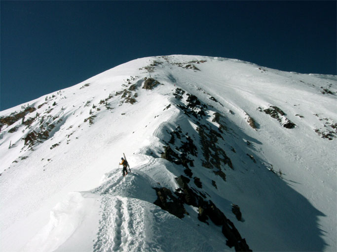

The hike starts on the Road to Provo cat track in Little Cloud bowl and proceeds up the knife ridge to the East Twin, shown above. The first part of the hike up to the ridge line is perhaps the steepest part. This photo shows Harry just above the point where the initial steep pitch joins the ridge. Careful inspection of this photo reveals two others higher up on the ridge.
The snow cover this season is amazing; usually there are a few narrow, rocky pitches on this part of the hike. This year, the ridge was covered completely with snow making it wider than usual.